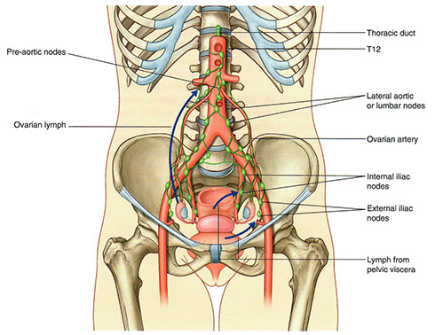

Module 2 - Nerves, Vessels and Lymphatic Drainage: Page 7 of 7
| Add the inguinal lymphatic nodes. |  Tap on image to enlarge |
|
| Add the abdominal lymphatic nodes. |
What are the implications of lymph flow based on the figure above.? |
|
|
Spread of cancer; infection. |
|
Since the lymph drainage follows the artery and vein of the ovary (testis), what is the implication of cancerous metastasies from the ovaries (testis)? |
|
|
Metastatic cancer will spread to the abdominal nodes rather than the pelvic nodes. |
|